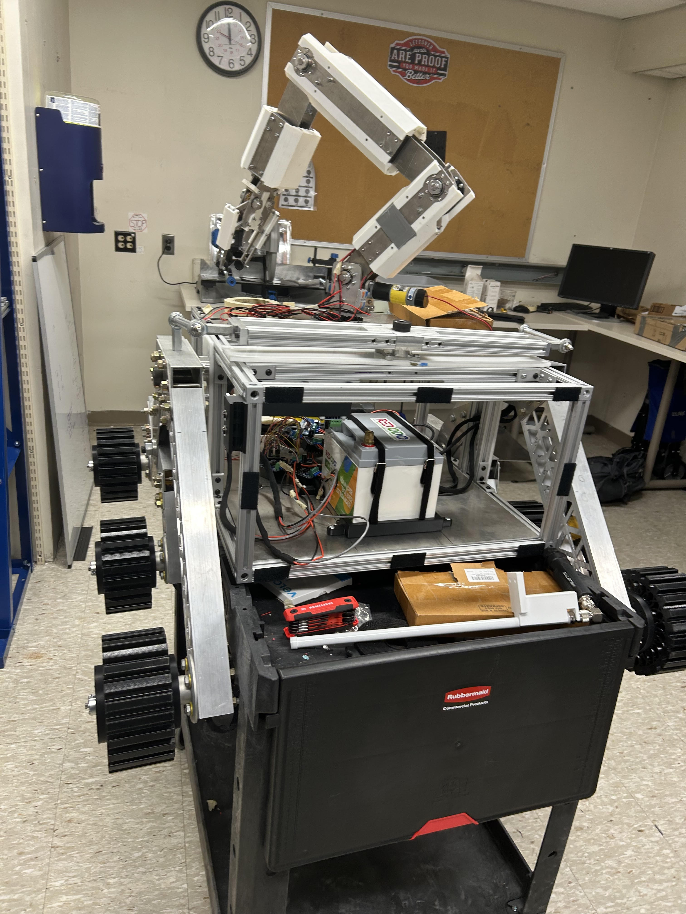
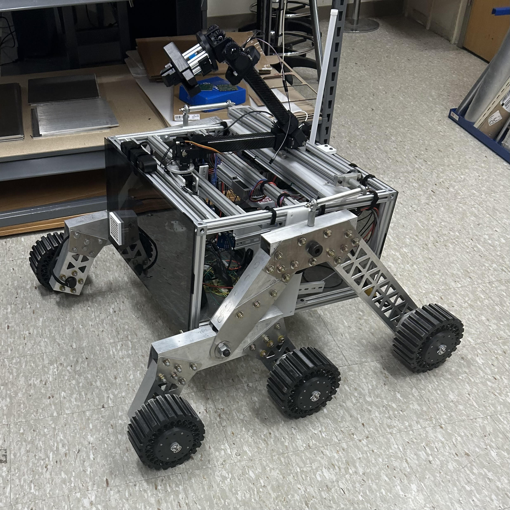
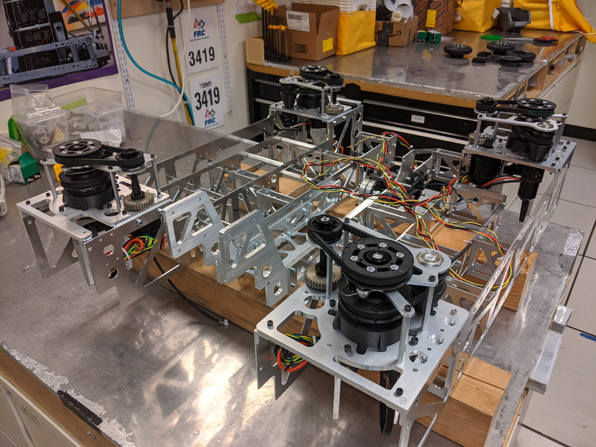
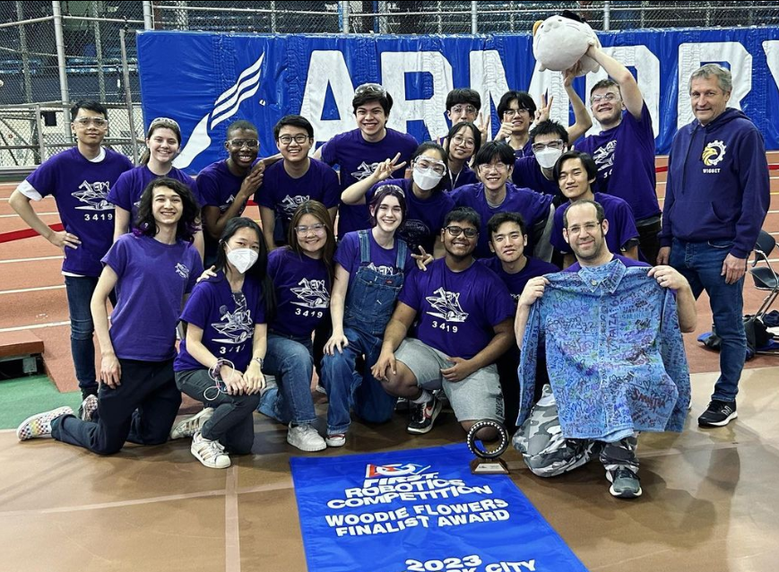
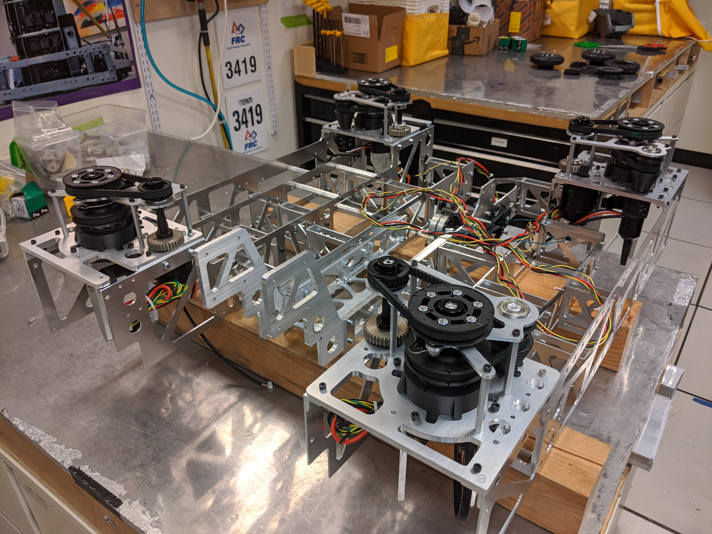
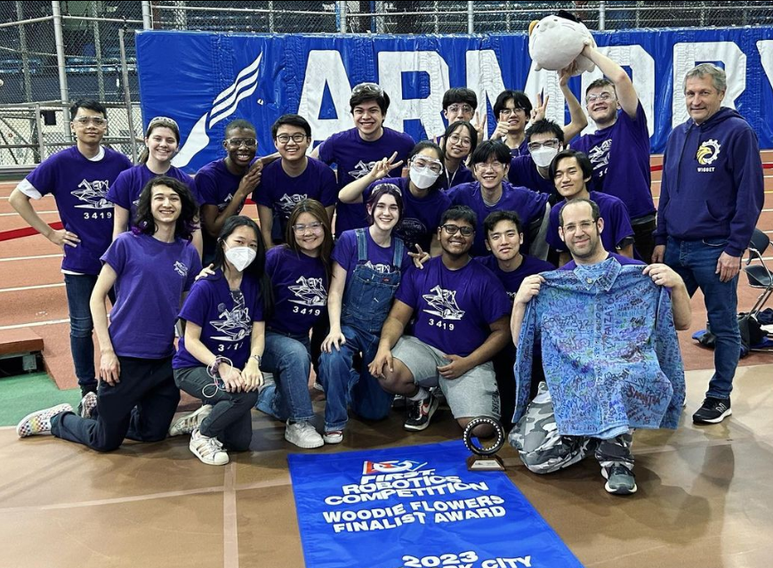

A few things I’ve built or contributed to.
BU Mars Rover Club
As a member of the Boston University Mars Rover Club (BUMRC), I have made contributions to the robotic arm and currently work on the chassis subteam. My work focuses on designing, analyzing, and improving the rover’s structural frame to ensure durability, lightweight performance, and adaptability across rough terrain. I collaborate with teammates to integrate the chassis with other subsystems—including drive, arm, soil sampling, and electronics—while balancing manufacturability and material constraints. This experience has strengthened my skills in CAD modeling, mechanical analysis, and hands-on prototyping, as well as my ability to work within an interdisciplinary engineering team toward a competitive, real-world robotics project.

CAD for the robotic arm.

Our current design for the competition.

Fusion360
Water Jet
CNC Mill
Laser cutting
Automatic Pill Cutter
For my Engineering Design class, I collaborated with three classmates to design a device that could automatically split medicine tablets in half, improving accessibility for the elderly or individuals that might struggle with the strength required of traditional pill cutters. This class taught me much about designing and constructing physical mechanisms, but also gave me valuable insights into workflow tools and processes I might use in industry. I designed the housing for our device in Onshape, and used 3D printing, lasercutting, and CNC milling to produce the final casing, slicing mechanism, and all other subsystems.

Gantt chart used to organize workflow within my group.

Prototype design for the device.
Onshape
CNC Mill
Soldering
Organization
Digital Temperature Sensor
I designed and built a digital temperature sensor using an Arduino microcontroller, programmed to display temperature readings on an LCD and trigger a buzzer when the temperature exceeded programmable limits. I handled all aspects of the project, including wiring the electronic components, using Onshape to design and 3D print a custom enclosure, as well as integrating the hardware with the software. This project strengthened my skills in embedded programming, electronics, and rapid prototyping, while giving me hands-on experience combining mechanical design with circuit and code integration.


Onshape
Laser cutting
Arduino
Circuitry
FRC Team 3419
In high school, I was a member of my school’s FIRST Robotics Competition (FRC) team, where I contributed to both design and fabrication. I used AutoCAD to create mechanical components and collaborated within a large, interdisciplinary team to turn designs into a working robot. On the manufacturing side, I gained hands-on experience with a variety of shop tools and processes such as CNC machining, tapping, and die work, helping ensure precise and reliable parts for assembly. In addition, I served as the team’s driver during competitions, which required quick decision-making, communication, and strategic coordination under pressure. This experience strengthened my skills in CAD, machining, and teamwork while exposing me to the full engineering cycle from concept to competition.
 



Onshape
Laser cutting
Arduino
C++